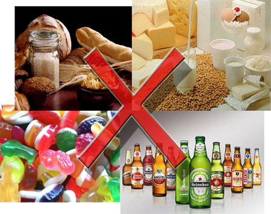
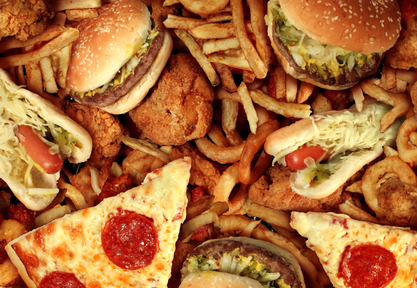

Qué alimentos evitar
La diabetes aumenta el riesgo de sufrir enfermedades cardíacas y accidente cerebrovascular porque acelera la obstrucción y el endurecimiento de las arterias. Los alimentos que contienen los siguientes elementos pueden ser un obstáculo en tu meta de seguir una dieta saludable para el corazón.

"alimentos prohibidos"
Así como existe una enorme lista de alimentos beneficiosos para las personas diabéticas, también hay alimentos que se deberían de eliminar de la dieta, dado que alternan la función del páncreas, el cual produce la insulina que regula la glucosa en sangre:
- Alimentos azucarados: Es esencial para los diabéticos no consumir azúcar ni alimentos que contengan mucha, dado que tienen un “efecto negativo sobre el control glucémico” explica Reyes. Alguno de estos alimentos son: chocolate, caramelos, mermelada, miel, helado, refrescos con azúcar, alcohol y galletas dulces, entre otros.
- Alimentos con sodio: Los alimentos que contengan sal o sodio elevan el nivel de presión sanguínea, provocando hipertensión y dando lugar a enfermedades cardiovasculares. Pan, pizza, embutidos, queso, patatas fritas y mantequilla son algunos de los alimentos con elevado nivel de sal para diabéticos.
- Alimentos con grasa: Estos aumentan el peso, el colesterol y pueden producir enfermedades cardiacas. Algunos ejemplos son: yema de huevo, carne con mucha grasa, mantequilla, etc. “La grasa utilizada debe ser aceite de oliva virgen extra”, asegura la especialista.
- Harinas refinadas y pan: Estos alimentos al entrar en el cuerpo, inmediatamente se convierten en glucosa en la sangre, por lo que se deben evitar. El arroz, el pan blanco, las galletas y la pasta contienen estos elementos.
- Lácteos: Todos los derivados de la leche que no estén descremados deben ser eliminados de la dieta de personas diabéticas, como: margarina, yogur, queso y nata.
La diabetes es una enfermedad que no exige una dieta muy estricta, de hecho, es un plan muy saludable en la que prevalecen los alimentos nutritivos y prohíbe los alimentos menos sanos.